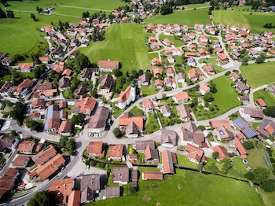
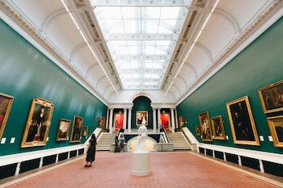
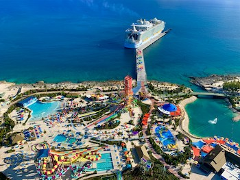
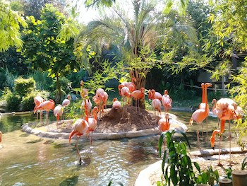

While most museums are a collection of old artifacts and stuff that no one is really interested in seeing, our museums are the best of the best.
You won't find anything like these anywhere else in the world. Our museums rival that of our closest competitors including the Museum of Bad Art, the Paris Sewers Museum and the Museum of Broken Relationships.
Come check them out...the fun is waiting for you.

